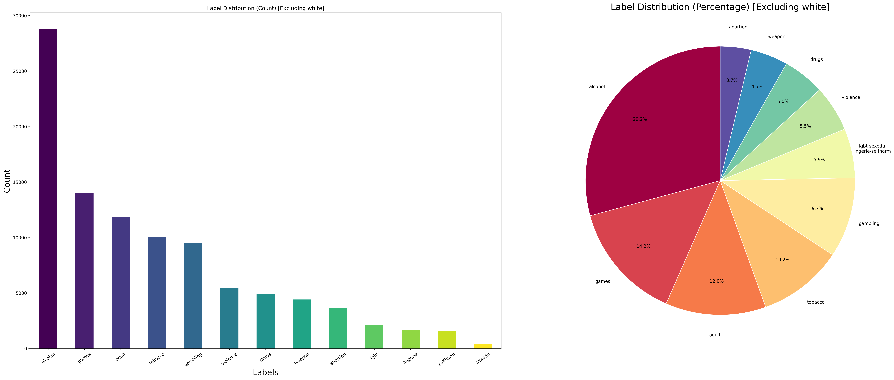
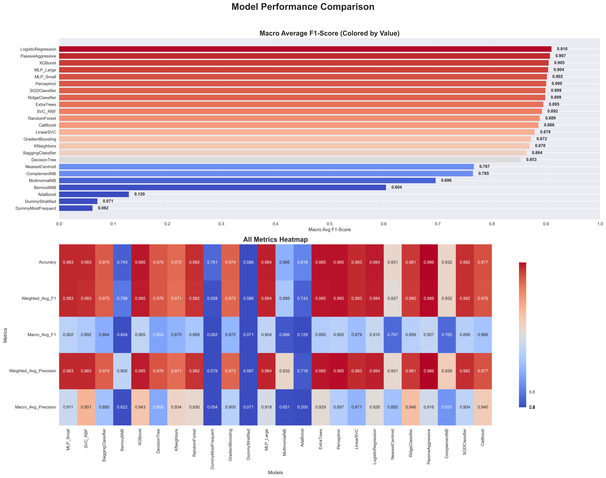
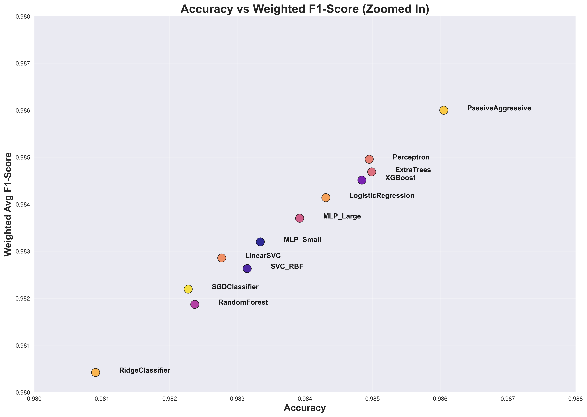
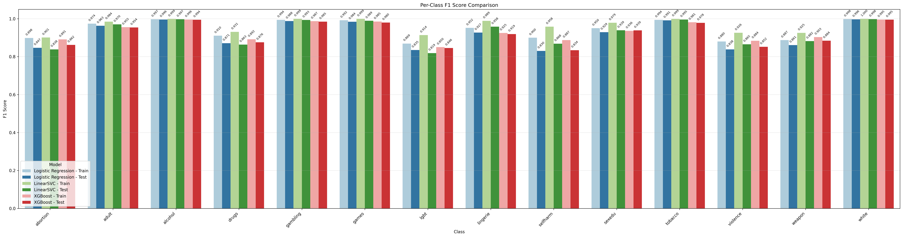
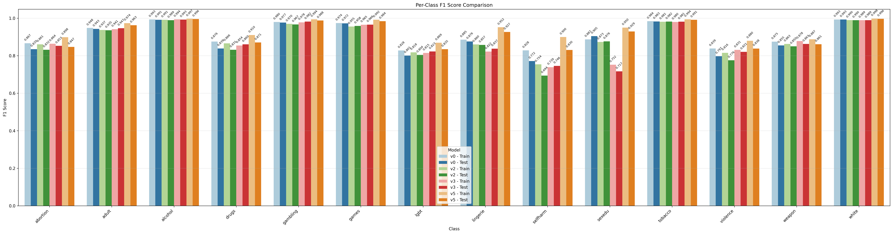
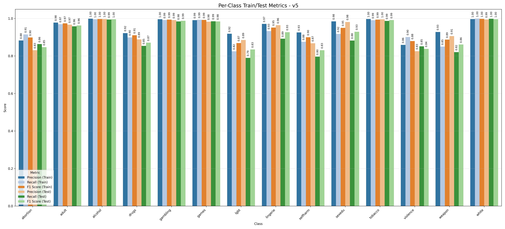
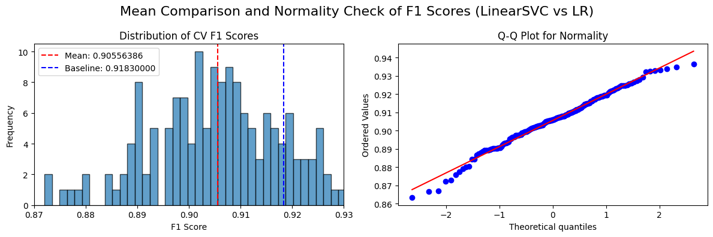

Chinese Language Web Classification Model
Enhanced Content Filtering for Educational Technology
2025-08-22
Introduction
The Digital Education Challenge
Current State
- >74% of US schools now meet FCC requirements for connectivity (Connected Nation and Funds For Learning 2023)
- 3:2 student-to-computer ratio, up from 7:1 (OECD 2023)
- 85% of OECD countries promoting digital strategies (OECD 2023)
- >1 billion students adopted digital learning (COVID-19) (UNESCO 2023)
The Problem
- Media Multitasking in education setting lowers grades (Ragan et al. 2014)
- 1 in 3 of students distracted by devices in math lessons (OECD 2024)
- 80% of students multitask on electronic devices while studying (“Student Device Usage Patterns” 2018)
- Negative impact on academic performance and cognitive development, aka brain drain (Ward et al. 2017)

Legacy Filtering Limitations
Traditional Methods
- URL Filtering: Block/allow lists
- DNS Filtering: Domain-level blocking
- Proxy Filtering: Intermediary servers
Critical Weaknesses
- Limited granularity (domain-level only)
- Easy circumvention (VPNs, proxies)
- Binary approach (all or nothing)
- No contextual understanding
Example Challenge
Same domain, different content:
news-website.com:
- /education/science-breakthrough ✅
- /entertainment/inappropriate ❌
- /health/wellness-tips ✅
- /adult-content ❌| Traditional filters | CWCM |
|---|---|
| All or nothing | Content-aware decisions |
Background & Related Work
Machine Learning Evolution in NLP

Evolution of Machine Learning over time
Model Comparison Framework
| Approach | Advantages | Limitations | Deployment |
|---|---|---|---|
| Logistic Regression | Fast inference, interpretable | Linear boundaries | ✅ Client-side |
| LinearSVC | High-dimensional performance | No probabilities | ✅ Client-side |
Model Comparison Framework
| Approach | Advantages | Limitations | Deployment |
|---|---|---|---|
| XGBoost | Non-linear patterns | Resource intensive | ❌ Server-only |
| BERT | Contextual understanding | Computational cost | ❌ Server-only |
Problem Statement
Current CWCM Limitations
Performance Issues
- Poor detection of subtle harmful content
- Fails on searches like “I want to eat heroin” (我想吃海洛因)
- Limited contextual understanding
- Outdated training data (2022)
Technical Constraints
- Maintain: <200ms inference time
- Works: On school Chromebooks
- Enhances: Previous model performance on Drugs, Tobacco, and Weapons.
Target Categories
Harmful 🚫
- Drugs
- Tobacco
- Weapons
- Adult Content
- Violence
- Self-harm
- etc.
Safe ✅
- Education
- News
- Science
- Arts
- etc.
Project Objectives
- Enhance existing CWCM with expanded dataset
- Improve accuracy for Drugs, Tobacco, Weapons detection
- Maintain deployment constraints (client-side, real-time)
- Prepare foundation for CWCM-V2 transformer integration
- Statistical validation of improvements
Methodology
Data Collection Strategy
Phase 1: Data Audit
- Relabeled existing URLs (Pages/Hosts)
- Identified 6 categories with insufficient data
- Initial assessment using Gemini 2.5-Flash
- Relabeled by hand to ensure quality
Phase 2: Automated Collection
- Selenium-based Google search crawler
- Keyword permutation strategy
- Random timing to avoid CAPTCHAs
- Domain extraction for potential host identification
Collection Results
Label Distribution for black category
Collection Results
| Category | New URLs |
|---|---|
| Abortion | 14,056 |
| Drugs | 4,600 |
| Gambling | 4,287 |
| Self-harm | 4,859 |
| Tobacco | 2,248 |
| Weapons | 2,482 |
Final Dataset: 429,066 datapoints (76.1% harmless)
Text Processing Pipeline

- Text extracted using production server clone
- Custom dictionary constructed for vectorization
- Vectorization strategy: TF-IDF
Feature Engineering
Dictionary Construction
- TextRank and TF-IDF: Top 200 features per category
- Jaccard Similarity: ~0.27 between methods
- White: 2500 most relevant features
- Final Dictionary: 4,783 features
- Stopwords, Numbers, and Irrelevant Symbols: Removed
Custom Preprocessing
- Chinese phrase-based segmentation (fxsjy n.d.)
- Standardization pipeline
- Category-specific weighting
Preprocessed Text Visualized

Text Distributions
Model Training
Comprehensive Algorithm Evaluation
Initial Screening: 34+ Algorithms
Linear Methods
- Logistic Regression
- LinearSVC, PassiveAggressive
- Perceptron, SGD Classifier
Tree-based Methods
- XGBoost, LightGBM
- Random Forest, Extra Trees
Initial Screening: 34+ Algorithms
Others
- Naive Bayes variants
- Neural Networks (MLP)
- SVM with RBF kernel
Evaluation Protocol
- 10-fold cross-validation
- Macro-averaged F1-score
- Statistical significance testing
- Deployment feasibility assessment
Results
Top 10 Agorithms (Default Parameters)
Results
Top 10 Agorithms (Default Parameters)
Top Model Performance
| Model | Accuracy | Macro F1 | Deployment |
|---|---|---|---|
| Logistic Regression ⭐ | 0.984 | 0.910 | ✅ Client-side |
| PassiveAggressive | 0.986 | 0.907 | ✅ Client-side |
| XGBoost | 0.985 | 0.905 | ❌ Resource heavy |
| LinearSVC | 0.983 | 0.879 | ✅ Client-side |
Ideal Candidate: Logistic Regression (best macro F1 + explainability)
Hyperparameter Optimization
Search Strategy
- RandomSearchCV/BayesSearchCV: Initial exploration with reduced dataset
- GridSearchCV: Fine-tuning
- Custom weights: Class imbalance handling
- Multiple Machines/Parallelization: For Training Speedup
Model Comparison
XGBoost, LinearSVC, and LogisticRegression
Model Comparison
Logistic Regression Version Comparison
Final Configuration
Performance Evolution
| Version | F1-Macro | Key Changes |
|---|---|---|
| V0 | 0.806 | Baseline |
| V2/V3 | 0.896 | High recall optimization |
| V4.4 | 0.904 | Data cleaning |
| V5 | 0.918 | Balanced optimization |
V5: Production model with optimal precision-recall balance
Results
Final Model Performance by Category
V5 Model Performance (Macro-Averaged F1, Recall, and Precision)
Statistical Performance Validation
Logistic Regression vs
XGBoost (n=130)
- Mean F1: 0.9155 vs 0.9183
- t-statistic: -7.60
- p-value: < 0.000001 ⭐
- Cohen’s d: -0.67 (medium effect)
LinearSVC (n=66)
- Mean F1: 0.9059 vs 0.9183
- t-statistic: -9.05
- p-value: < 0.000001 ⭐
- Cohen’s d: -1.11 (large effect)
Statistical Significance
XGBoost
Statistical Significance
LinearSVC
Dataset Size Impact Analysis
Correlation Findings
- F1 vs log(sample size): ρ = 0.687, p = 0.0095 ⭐
- Recall vs log(sample size): ρ = 0.698, p = 0.008 ⭐
- Precision vs log(sample size): ρ = 0.550, p = 0.052
Key Insight: Strong evidence that larger datasets improve performance, especially for recall metrics.
Model Architecture Insights
Why Logistic Regression Won
- Deployment Efficiency: Client-side JavaScript compatibility
- Interpretability: Clear probability outputs for threshold tuning
- Generalization: Consistent train-test performance gaps
- Statistical Rigor: Significant outperformance of alternatives
- Production Ready: Proven stability in resource-constrained environments
Discussion
Key Technical Decisions
Multinomial vs OVR
- Chosen: Multinomial approach
- Trade-off: Theoretical limitations and practical gains (overfitting)
- Note: IIA assumption, One-Vs-Rest testing in progress
- All Models: Heavily reliant on Feature Engineering
Linear or No Linear?
- Chosen: Linear (Logistic Regression)
- Rationale: Deployment constraints, consistency
- Evidence: Non-linear models (XGBoost) showed overfitting
- Limitations: LinearSVC difficult to explain, poor performance from other models.
Result Tuning with OVR

Former Configurations for Softmax Output
Production Considerations
Deployment Architecture

Current and Future Model Deployment Strategy
Benefits: No API costs, privacy-first, sub-100ms latency
Ethical Considerations
Balancing Safety and Access
Privacy Protection
- Client-side processing: No data leaves device
- Zero PII collection: Content analysis only
- ISO 27001 compliance: Security standards
- Transparency: Clear administrator controls
Bias Mitigation
- Cultural sensitivity: Taiwan-specific content
- Performance monitoring: Category-wise analysis
- Threshold flexibility: Local customization
- Continuous evaluation: Real-world feedback
Content Classification Ethics
Challenges
- Subjective nature of “harmful”
- Cultural context dependency
- Over-censorship risks
- Educational access balance
Solutions
- Administrator override capabilities
- Category-specific tuning
- Dual-layer architecture (CWCM + V2)
- Regular policy review processes
Public Health Justification
- WHO warnings: Teens, screens, and mental health
- U.S. Surgeon General: Social media youth advisory
- Research evidence: Violence exposure impacts academic achievement
- “Brain rot”: Digital overload cognitive impairment
- Educational necessity: Curated digital environments for learning
Future Work
CWCM-V2 Development
Transformer Integration
- Architecture: BERT-based secondary layer
- Purpose: Contextual understanding enhancement
- Deployment: High-precision refinement of CWCM decisions
- Target: Complex semantic relationships
Technical Roadmap
- Phase 1: CWCM production deployment
- Phase 2: Transformer model fine-tuning
- Phase 3: Dual-layer integration
- Phase 4: Performance optimization
Technical Roadmap

Final Vision
Research Extensions
Immediate Improvements
- Data quality: Clean non-Chinese entries
- Dataset expansion: Systematic collection for underperforming categories
- Threshold optimization: Production-based calibration
- Ensemble methods: Multiple linear model combinations
Long-term Vision
- Multilingual support: Beyond Traditional Chinese
- Multimodal analysis: Images and video content
- Federated learning: Cross-institutional knowledge sharing
- Predictive modeling: Proactive content curation
Conclusion
Key Achievements
✅ Enhanced dataset: 429,066 samples with focused harmful category augmentation
✅ Statistical validation: Significant improvements over XGBoost (p<0.000001) and LinearSVC (p<0.000001)
✅ Production-ready: Client-side deployment architecture with sub-100ms inference
✅ Balanced performance: F1-macro 0.918 across 13 content categories
✅ Empirical insights: Strong correlation between dataset size and performance (ρ=0.687)
Impact and Contribution
Educational Technology
- Effective Chinese content filtering for K-12
- Scalable solution for hundreds of thousands of students
- Privacy-first architecture
- Real-time protection without over-censorship
Contribution
- Systematic evaluation of 34+ ML algorithms for Chinese text classification
- Statistical framework for model selection in educational contexts
- Empirical evidence for data collection prioritization strategies
Technical Innovation
- Custom TF-IDF dictionary construction
- Category-specific threshold calibration
- Client-side transformer preparation
- Dual-layer architecture foundation
Broader Implications
- Replicable framework for multilingual content filtering
- Balance of accuracy, efficiency, and ethics
- Foundation for next-generation educational AI systems
Thank You
Questions & Discussion
Contact Information:
- Mingjia “Jacky” Guan
- Senior Project - Chinese Web Classification Model
- August 21, 2025
Key Resources:
- GitHub: Model implementation and documentation
- Production: Taiwan K-12 deployment
- Future: CWCM-V2 transformer integration
Appendix: Technical Details
Model Performance Matrix
# Final Model Configuration
model = LogisticRegression(
C=220.77,
penalty='l2',
multi_class='multinomial',
solver='saga',
class_weight='balanced',
random_state=42
)
# Performance Metrics
metrics = {
'f1_macro': 0.9183,
'precision_macro': 0.9341,
'recall_macro': 0.9040,
'accuracy': 0.9840
}Feature Engineering Pipeline

CWCM Capstone Project | August 2025